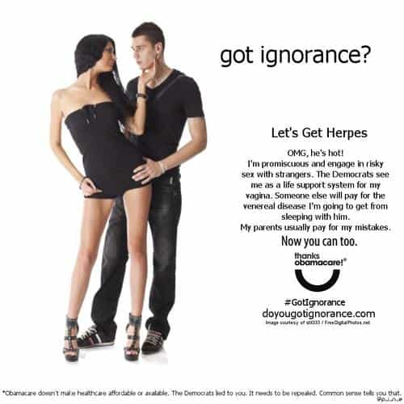

Rod Berne is a student, writer, and thought criminal. His columns run every Saturday. Follow him on Twitter.


Over the last several decades, the number of children being raised in single parent homes has skyrocketed. While there is plenty of evidence to confirm that children are less likely to be abused and more likely to be successful when raised in a traditional two parent family, more children are living in single parent homes than ever before. This raises an interesting question: In an era of birth control and legal abortion, why are there more broken homes and children born to unwed mothers?
Suppose you entered a time machine and traveled to 1960. You start a conversation with a citizen and tell him you’re from the future. After his initial shock subsides, you tell him that in the 21st century, our cool black president will ensure birth control would be available to all young women, condoms will be freely available at clinics and high schools, and even if contraception fails, abortion is legal in all 50 states. You then ask him, “Do you think in the future there will be more unwanted pregnancies, more broken homes, and more children living in poverty, or fewer?” Imagine what this man might think.
Our friend from 1960 might be astounded to learn that the number of single parents have more than tripled as a share of American households over the last six decades. He might reasonably ask, “But if you have free birth control and legal abortion, why aren’t more people waiting or optimizing their plans so their children have two parents?”
Moreover, births to unmarried mothers and number of children in foster care have also risen. In 1960, the number of children living in foster care and institutions was approximately 200,000. In the 1990s it jumped to over half a million, and most recently it is still more than 400,000.
It may sound crass to ask this, but why did their parents not take advantage of the widely available options to prevent pregnancy? Some would argue that preventing the birth of a child in dire circumstances would be far more compassionate than allowing their child to be raised by multiple different foster families. Why did American families fall apart after the rise of birth control and abortion?
Enter the Akerloff-Yellen theory of reproductive technology. In a provocative paper from the Brookings Institute, researchers analyzed the influence of reproductive technology on families and births in the United States.
The researchers linked the decline of the traditional family to a “technology shock” created by both birth control and legal abortion. That combination changed the incentives surrounding sex and marriage: Women now have power over reproduction at the expense of other kinds of power in relationships (particularly the collective power to not have sex with uncommitted men), and men “changed their attitudes regarding the responsibility for unplanned pregnancies.” Men began to place reproductive responsibility mostly on the woman. After all, her body, her choice.
Her body, her choice
As a consequence of making pregnancy and birth the physical choice of the woman, marriage and fatherhood became the social choice of the man. Fatherhood is no longer an obligation, thanks to contraception and loose social norms. In the past, women were far more selective about their sexual partners, and had few options when they became pregnant. Furthermore, men were often more invested in the women by the time they had sex, and felt a sense of responsibility and obligation to both the woman and child.

More choices for women means more choices for men, too
Today, with the lack of social stigma plus the emphasis on female choice, we can observe the predictable consequences for the two-parent family. Previously, sex had higher stakes for both men and women, and their behavior reflected that. Today, women can engage in sex with multiple partners while sterilizing her body at the height of her fertility.
Women also appear to be using the outdated strategy of trying to lock down a man for marriage by “accidentally” skipping her birth control and getting pregnant. Today, women seem to be unaware that while they have the choice whether or not to get pregnant, men now have the choice to stick around and help raise the child or leave and send her a monthly check.
Men no longer feel the same duty toward women that our grandfathers felt. When we see women behaving like sluts, taking semi-nude selfies on social media, and openly discussing in public their sexual misadventures of the previous night, we don’t think to ourselves, “This women would be an excellent mother.” Some men, if their sexual partner gets pregnant whether on purpose or on accident, feel no obligation to the woman for two reasons:
Why, some men think to themselves, should I help her with this problem that she created for herself?
Perfectly encapsulated in a single tweet.
These are the results of the technology that supposedly set women free. Women craved the chance to live like men by giving their best years in order to attain a worthless degree and enter a soul-sucking office job. Women embraced the sexual revolution by swallowing sterilization pills so they could impress strangers by saying they are a “diversity consultant” or other nonsensical, self-important titles.
Women made their choice, not understanding that their decisions don’t exist in a vacuum. For something as sensitive and important and children and family, it is surprising that more people did not predict that this technology would disrupt nearly every facet of American society, not just women’s ability to avoid childrearing.

To conclude, birth control and abortion have had an immense effect on American culture: By reducing the chances that any particular sexual encounter would lead to pregnancy or childrearing, the widespread availability of contraception in the 1960s in addition to Planned Parenthood clinics popping up across the country after Roe v. Wade in 1973, essentially guaranteed a loosening of sexual attitudes, a period of great social upheaval, and a shift away from the traditions of courtship.
One quote sums up men’s reactions to women’s poor choices, “Women today want men more like our grandfathers. But our grandfathers were only attracted to women like our grandmothers.”
 If you like this article and are concerned about the future of the Western world, check out Roosh's book Free Speech Isn't Free. It gives an inside look to how the globalist establishment is attempting to marginalize masculine men with a leftist agenda that promotes censorship, feminism, and sterility. It also shares key knowledge and tools that you can use to defend yourself against social justice attacks. Click here to learn more about the book. Your support will help maintain our operation.
If you like this article and are concerned about the future of the Western world, check out Roosh's book Free Speech Isn't Free. It gives an inside look to how the globalist establishment is attempting to marginalize masculine men with a leftist agenda that promotes censorship, feminism, and sterility. It also shares key knowledge and tools that you can use to defend yourself against social justice attacks. Click here to learn more about the book. Your support will help maintain our operation.
Read More: New Birth Control Ads Show Women’s Fucked Up Priorities